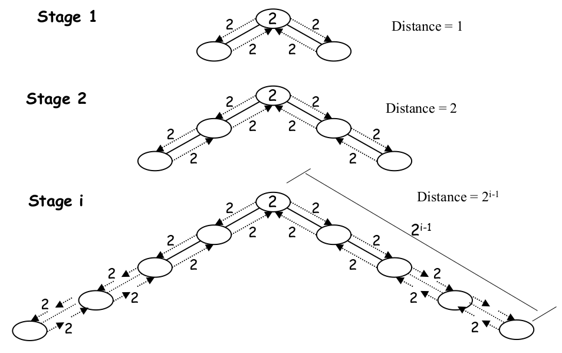
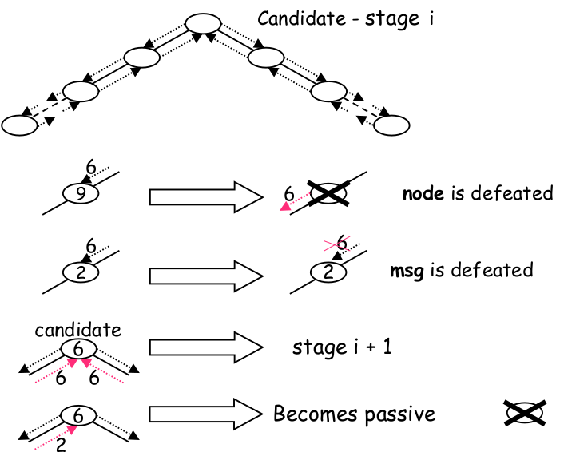
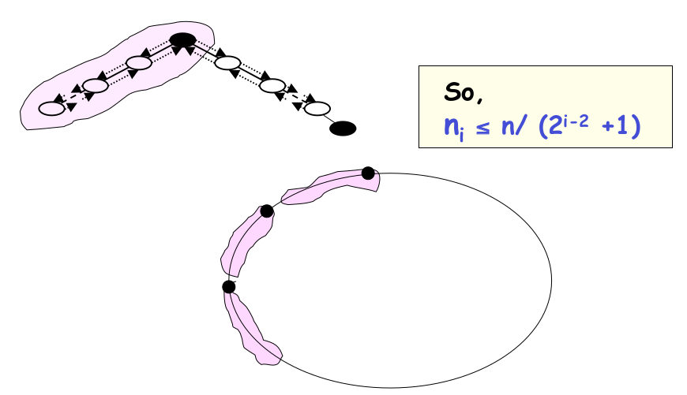

ADRC - Lesson 09
Nella precedente lezione sono stati introdotti due protocollo per la leader election su anelli con etichette uniche.
In particolare il protocollo as-far che risolve il task nel worst case con una message complexity di \(O(n^2)\).
È possibile dimostrare che nel caso medio il protocollo ha una message complexity invece di \(O(n\log{n})\).
Si parla di caso medio perché il tempo di esecuzione dipende dalla disposizione delle etichette, e questa è un
evento aleatorio.
In seguito verrà mostrato un protocollo deterministico che anche nel caso peggiore ha una message complexity
dell'ordine di \(O(n\log{n})\).
1 Controlled distances - The Stage Technique
Osserviamo che sia nel protocollo as-far che nel protocollo all-the-way le etichette viaggiano lungo l'anello in maniera incontrollata.
In particolare nel protocollo as-far viaggiano finché non vengono filtrati da un nodo con etichetta più bassa,
mentre nel protocollo all-the-way addirittura viaggiano lungo l'intero anello.
L'idea sarebbe quindi quella di controllare la trasmissione di una etichetta ad una distanza limitata, e di avere dei
feedback per eventualmente bloccare o estendere la trasmissione di una etichetta.
Più precisamente un nodo attivo \(x\) esegue il protocollo a stages, dove nello stage \(i\)-esimo esso inoltrerà a destra e
a sinistra la sua etichetta \(id(x)\) fino a un massimo di distanza \(2^{i-1}\).
Così facendo l'etichetta avrà ricoperto un numero di nodi pari a \(2^i\), ovvero \(2^{i-1}\) nodi a destra e \(2^{i-1}\) nodi a sinistra.

Quando un nodo \(y\) riceve l'etichetta di \(x\) la inoltrerà solamente se \(id(y) > id(x)\).
Nel caso in cui \(y\) inoltrerà \(id(x)\) allora vorrà dire che certamente \(y\) non sarà mai eletto leader, e quindi passerà
in uno stato di defeated in cui potrà solamente inoltrere le etichette degli altri.
Se l'etichetta \(id(x)\) arriva a distanza \(2^{i-1}\) allora essa verrà rispedita indietro come messaggio di feedback.
Se il nodo \(x\) riceverà un feedback da entrambi i lati vorrà dire che tutti i nodi a distanza \(2^{i-1}\) da lui avranno
etichette maggiori, e quindi dovrà inoltrere l'etichetta più lontano.
In questo caso diciamo che \(x\) è sopravvissuto allo stage \(i\) e quindi potrà passare allo stage \(i+1\).
Notiamo che se \(x\) non riceve il feedback da uno o tutti e due i lati, vuol dire che esiste almeno un nodo \(z\) entro \(2^{i-1}\)
passi con etichetta minore \(id(z) < id(x)\), e quindi prima o poi \(x\) verrà battuto (defeat) dall'etichetta \(id(z)\).

Infine, quando un nodo \(x^\star\) riceverà da destra il messaggio che aveva inviato a sinistra, oppure da sinistra quello che
aveva invato a destra, allora \(x^\star\) potrà affermare di essere il leader.
A questo punto \(x^\star\) manderà in broadcast un messaggio di notifica, che farà terminare globalmente il protocollo,
facendo passare tutti i nodi nello stato defeated allo stato follower.
Ricapitolando:
- in ogno stage \(i\) c'è un insieme di nodi candidati al ruolo di leader.
- ogni candidato manda la sua etichetta a destra e a sinistra.
- l'etichetta viaggia finché non incontra un nodo con etichetta più piccola oppure finché non arriva a distanza \(2^{i-1}\).
- se l'etichetta non incontra nessun nodo con etichetta più piccola allora essa tornerà indietro.
- se un nodo riceverà indietro le etichette da entrambi i lati allora potrà passare allo stage successivo.
In aggiunta ci sono altre tre meta-regole:
- se un nodo nello stato
candidatoriceverà un'etichetta da lato opposto a quello da cui l'ha mandata, allora diventeràleadere lo notificherà ai suoi vicini. - se un nodo
candidatoriceverà un'etichetta minore della sua allora passerà allo statodefeated. - un nodo nello stato
defeatedpotrà solamente inoltrare i messaggi di altri nodi, e passerà allo statofollowerquando riceverà la notifica dal leader.
Definiamo ora formalmente gli stati del protocollo e una sua possibile implementazione
\begin{align*} S &= \lbrace \texttt{ASLEEP}, \texttt{CANDIDATE}, \texttt{DEFEATED}, \texttt{FOLLOWER}, \texttt{LEADER} \rbrace\\ S_{init} &= \lbrace \texttt{ASLEEP} \rbrace\\ S_{final} &= \lbrace \texttt{FOLLOWER}, \texttt{LEADER} \rbrace \end{align*}def limit(i):
assert i > 0
return 2**(i+1)
def initialize(self):
self.stage = 1
self.limit = limit(1)
self.count = 0
send("FORTH", self.id, self.stage, self.limit, direction=1) to self.neigh(direction=1) # 1 = right
send("FORTH", self.id, self.stage, self.limit, direction=0) to self.neigh(direction=0) # 0 = left
def process(self, msg):
msg.limit -= 1
if msg.limit == 0:
self.send("BACK", msg.id, direction = not msg.direction) to msg.sender
else:
self.send("FORTH", msg.id, msg.state, msg.limit) to self.neigh(direction=msg.direction)
def notify(self):
send("NOTIFY", leader=self.id, direction=1)
def check(self):
self.count += 1
if self.count == 2:
self.count = 0
self.stage += 1
self.limit = limit(self.stage)
send("FORTH", self.id, self.stage, self.limit, direction=1) to self.neigh(direction=1) # 1 = right
send("FORTH", self.id, self.stage, self.limit, direction=0) to self.neigh(direction=0) # 0 = left
LEADER = None
if self.state == "ASLEEP":
spontaneously:
self.initialize()
self.state = "CANDIDATE"
receiving(msg):
if msg.id < self.id:
self.process(msg)
self.state = "DEFEATED"
else:
self.initialize()
self.state = "CANDIDATE"
elif self.state == "CANDIDATE":
receiving(msg):
if msg.type == "FORTH":
if msg.id < self.id:
self.process(msg)
self.state = "DEFEATED"
elif msg.id == self.id:
LEADER = self.id
self.notify()
if msg.type == "BACK":
if msg.id == self.id:
self.check()
if msg.type == "NOTIFY":
LEADER = msg.id
send(msg) to self.neigh(direction=msg.direction)
self.state = "FOLLOWER"
elif self.state == "DEFEATED":
receiving(msg):
send(msg) to self.neigh(direction=msg.direction)
self.state = "FOLLOWER"
1.1 Correttezza
La correttezza del protocollo è implicata dalla descrizione del protocollo.
Infatti solamente l'etichetta minima sarà in grado di compiere un giro completo, portando allo stato defeat tutti gli altri nodi dell'onello.
Inoltre tramite il messaggio di notifica da parte del leader tutti gli altri nodi passeranno allo stato follower.
In conclusione si arriverà sempre allo stato finale accettabile in cui si ha un solo leader e tutti followers.
1.2 Message Complexity
Considerando che il ritardo dei messaggi è impredicibile si osserverà che ad un dato tempo \(t\) non solo ci saranno nodi
in stati differenti (come ci si aspetta) ma anche che ci saranno nodi candidati in fasi differenti.
Più in generale, non essendoci una Message Ordering, può capitare che dei messaggi sorpassino degli altri.
Perciò, per i motivi precedentemente citati, faremo un'analisi procedendo per logical stages, ovvero non considerando
che differenti nodi possono eseguire uno stesso stage a tempi differenti.
Sia \(i > 1\), definiamo \(n_i\) il numero di nodi che iniziano lo stage \(i\), ovvero quelli sopravvissuti allo stage \(i-1\). Per essere sopravvissuti allo stage \(i-1\) (e quindi ritrovarsi allo stage \(i\)) vuol dire che il nodo \(x\) ha un'etichetta \(id(x)\) minore di \(2^{i-2}\) nodi alla sua destra e \(2^{i-2}\) nodi alla sua sinistra. Perciò possiamo dire che nella fase \(i-1\) può sopravvivere al più un solo nodo ogni \(2^{i-2}+1\) nodi, e quindi avremo che \[ n_i \leq \frac{n}{2^{i-2}+1} \]

Non ci può essere più di un sopravvissuto ogni \(2^{i-2}+1\) nodi in quanto se ce ne fossero di più, per esempio \(x\) e \(y\),
vorrebbe dire che \(x\) ed \(y\) si sono scambiati le etichette senza però che uno dei due venisse "sconfitto" (defeated),
e ciò implicherebbe che \(id(x) < id(y) < id(x)\) (assurdo!).
Allo stage \(i\) ogni nodo candidato \(x\) inoltra la sua etichetta ad al più \(2 \cdot 2^{i-1} = 2^i\) nodi, per un totale
massimo di nodi di tipo FORTH inviti di \(n_i2^i\).
Dato che alla fase \(i\) sopravviveranno \(n_{i+1}\) candidati, per ognuno verranno necessariamente trasmessi altri \(2 \cdot 2^{i-1} = 2^i\)
messaggi di feedback, per un complessivo massimo di \(n_{i+1}2^i\) messaggi di tipo BACK.
Infine ogni nodo che non sopravvive alla fase \(i\) riceverà nessuno o al più un feedback, per un massimo di \(2^{i-1}\) ulteriori messaggi.
Dato che sono \(n_i - n_{i+1}\) nodi defeated nella fase \(i\), si pagerà un costo in messaggi di al più
\((n_i - n_{i+1})2^{i-1}\) messaggi ulteriori.
Perciò complessivamente nella fase \(i>1\) verranno mandati al più il seguente valore di messaggi
\begin{align*} 2n_i2^{i-1} + 2n_{i+1}2^{i-1} + (n_i - n_{i+1})2^{i-1} &= (3n_i + n_{i+1})2^{i-1}\\ &\leq (3\lfloor \frac{n}{2^{i-2}+1} \rfloor + \lfloor \frac{n}{2^{i-1}+1} \rfloor)2^{i-1}\\ &< (3\frac{n}{2^{i-2}+1} + \frac{n}{2^{i-1}+1})2^{i-1}\\ &< (3\frac{n}{2^{i-2}} + \frac{n}{2^{i-1}})2^{i-1}\\ &= 6n + n = 7n \end{align*}Dando una stima di \(n_1 \leq n\) avremo che le fasi potranno essere al più \(\log_2{n}\). Complessivamente la message complexity sarà
\begin{align*} MSG(\texttt{stage}) &\leq \overbrace{O(n)}^{\texttt{stage 1}} + \sum_{i=2}^{\log_2{n}} 7n\\ &< O(n) + n\sum_{i=1}^{\log_2{n}} 7\\ &= O(n) + 7n\log_2{n} \in O(n\log{n}) \end{align*}[da aggiungere conclusioni]